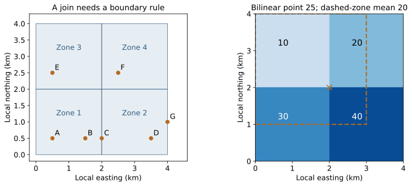
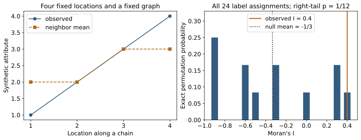

Browse chapters
16 Analyze places and spatial relationships
Start with a location decision
Suppose a research team has collected reports about service access in a city. Each report names a place, an observation date, a waiting time, and the source from which the claim came. The team can investigate only three places next week. Should it revisit an apparent cluster of long waits, visit an area with few reports, or verify an unusually severe individual report?
A map is useful here because location might explain which reports share a service catchment, which are close enough to revisit together, and where evidence is absent. A map can also mislead: duplicated reports can look like independent corroboration, a district centroid can look like an exact address, and a densely populated area can look unusually troubled simply because more people report from it.
The project in this chapter is to build an auditable spatial summary before choosing a follow-up. We will connect a table to geometry, join observations to areas, sample a raster, interpolate an unobserved value, and ask whether similar values are neighbors. Every coordinate and value in the companion is invented. These are proposed techniques for a Nearwork-style research workflow, not claims about Nearwork's present implementation or private data.
The output is a shortlist with reasons and limitations. It should preserve the evidence that supports each location, the spatial assumptions that change its ranking, and the gaps that additional research could resolve. The mathematical tools help identify those gaps; they do not decide which consequence matters most.
Give a location a meaning before calculating distance
A point is a pair of coordinates. A line is an ordered sequence of points. A polygon represents an area, possibly with holes and disconnected parts. These vector geometries describe objects. A raster divides a domain into cells and records a value for each cell. It describes a sampled field or a collection of area summaries. Neither representation is inherently more accurate; the geometry must match what was measured.
A coordinate reference system, or CRS, tells software what coordinates mean on Earth. Geographic coordinates commonly express longitude and latitude in degrees. Projected coordinates place locations on a plane, often in meters. Declaring a CRS interprets existing coordinates; transforming a CRS calculates new coordinates for the same locations. GeoPandas distinguishes these operations as set_crs and to_crs. Reassigning a meter-based CRS to degree values does not convert them. GeoPandas projections
The coordinate order is another part of the contract. GeoPandas geometries use x, y; geographic points are therefore longitude, latitude. A data source may publish latitude first. A pair of valid-looking numbers can be swapped without producing a software error. Check a known landmark and the total extent before trusting the layer. Store the source CRS with the data rather than guessing it from a plausible map.
Consider two invented points one degree apart in longitude. On a sphere, the distance is about 111.195 km at the equator and 55.597 km at latitude 60 degrees. The difference comes from geometry, not a change in the coordinate unit. Longitude lines converge toward the poles. Treating degrees as uniform Cartesian distances would erase that fact.
For a sphere of radius R, convert angles to radians and calculate:
h = sin²((latitude2 - latitude1)/2)
+ cos(latitude1) cos(latitude2) sin²((longitude2 - longitude1)/2)
distance = 2 R arcsin(sqrt(h))The companion uses R = 6,371.0088 km and clips h to [0, 1] to protect against floating-point overshoot. This great-circle calculation is a teaching approximation. Production work that needs ellipsoidal accuracy should use a geodesic implementation and the correct datum. It also needs to distinguish straight-line distance from road travel time: a river crossing can dominate access even when two points are geographically close.
Use a projection suitable for the study extent and the quantity being measured. A local engineering distance problem and a country-wide area comparison may need different projections. All plane projections distort something; meter units alone do not guarantee adequate distance or area accuracy. Web display coordinates are not automatically an appropriate measurement system. Verify distortion against the required tolerance, especially across large extents or projection-zone boundaries. PROJ's geodesic routines provide a separate route for ellipsoidal distance calculations. PROJ geodesic calculations
Turn reports into a spatial join
Imagine a four-kilometer square divided into four two-by-two-kilometer zones. These are synthetic local Cartesian coordinates in kilometers; we do not attach a real-world EPSG code. Seven reports occur at A = (0.5, 0.5), B = (1.5, 0.5), C = (2, 0.5), D = (3.5, 0.5), E = (0.5, 2.5), F = (2.5, 2.5), and G = (4, 1).
A spatial join attaches zone attributes to reports whose geometry satisfies a predicate. An attribute join instead matches identifiers such as zone_id. Production spatial predicates distinguish containment from intersection and boundary-inclusive relationships. A join can return several matches for one observation, particularly with overlapping polygons. Inspect the match cardinality rather than assuming that one input row remains one output row. GeoPandas spatial joins
C lies exactly on the boundary between the two southern zones. G lies on the eastern outer boundary. A strict interior rule leaves both unmatched. A boundary-inclusive rule assigns C twice and includes G. To expose the arithmetic, the teaching code uses half-open rectangles: include the lower x and y bounds, exclude the upper bounds.
from gis_finance_examples import rectangle_join
points = [[.5,.5], [1.5,.5], [2.,.5], [3.5,.5],
[.5,2.5], [2.5,2.5], [4.,1.]]
zones = [[0,0,2,2], [2,0,4,2], [0,2,2,4], [2,2,4,4]]
matches = rectangle_join(points, zones, boundary="half_open")
assert matches == [[0], [0], [1], [1], [2], [3], []]The four counts are 2, 2, 1, and 1; G remains outside the defined domain. Half-open rectangles are a transparent partition for this grid, not a universal administrative-boundary rule. A real boundary case might need authoritative address assignment, an explicit tie rule, or an ambiguity flag. It should not silently disappear in an inner join.
Record the input count, distinct observation count, unmatched count, and observations with multiple matches. After aggregation, reconcile the total to the assignment rule. If a report intentionally belongs to two overlapping service catchments, its repeated membership may be legitimate; counting those memberships as two independent reports is not.
Before joining real polygons, inspect empty or invalid geometries, holes, duplicated features, boundary versions, and CRS agreement. A geometry repair can change an area, so preserve the original and document the repair. A spatial index speeds candidate lookup but does not replace the exact relationship test. For nearest joins, keep the measured distance, set a defensible search limit, and inspect ties. The nearest known facility is not necessarily an eligible, open, or reachable facility.

Figure 11. Left: seven invented reports and four zones; C and G expose boundary choices. Right: four raster cells with values 10, 20, 30, and 40. The orange cross has a bilinear estimate of 25, while the dashed polygon has an area-weighted mean of 20. Both panels use local kilometer coordinates and equal axis scales; they do not depict a real place.
Know whether a raster value belongs to a point or an area
Chapter 15 treated an image as an array whose pixels could be calibrated into physical coordinates. A georeferenced raster adds an explicit transformation between pixel coordinates and map coordinates. An affine transformation can translate, scale, rotate, and shear a grid.
In GDAL's convention, let c and r denote column and row coordinates measured from the upper-left pixel corner. With six coefficients g0 through g5:
x = g0 + g1 c + g2 r
y = g3 + g4 c + g5 rFor a north-up raster without rotation, g2 and g4 are zero, g1 is the pixel width, and g5 is a negative pixel height. The center of array element [r, c] uses c + 0.5 and r + 0.5 in this equation. Confusing corners with centers creates a half-cell displacement. GDAL geotransform tutorial
Our raster is [[10, 20], [30, 40]]. Each cell is two kilometers wide. The upper-left corner is (0, 4), so its transform is [0, 2, 0, 4, 0, −2]. The value 10 has center (1, 3); the value 40 has center (3, 1). To locate a world point in a rotated grid, solve the two-by-two linear system for c and r rather than assuming axis alignment. The companion rejects singular transforms.
At (2, 2), four cells meet. Our containing-cell convention selects row 1, column 1 and returns 40. Bilinear interpolation between centers gives each of the four values weight 1/4 and returns 25. Neither computation resolves what the raster actually measures. If cells contain land-cover category codes, averaging their numeric labels is meaningless. If cells hold a smooth field sampled at centers, bilinear interpolation can be sensible. If they contain total population, careless interpolation can invent or lose population.
An area query needs another operation. Let A_j be the area of overlap between the query polygon and cell j, and v_j the cell value. If v_j is a cell-average intensity, an area-weighted mean is:
zone mean = sum(A_j v_j) / sum(A_j)For the rectangle from (0, 1) to (3, 4), overlap areas are 4, 2, 2, and 1 square kilometers. Its mean is (4×10 + 2×20 + 2×30 + 1×40)/9 = 20. An unweighted mean of all touched cells would be 25. A cell-center inclusion rule can give yet another answer. Report which support and boundary convention you used.
NoData is not zero. If a missing cell is excluded, the denominator must also exclude its area, and the result describes only the observed part. The companion returns the observed area fraction alongside the mean. A zone with ten percent coverage should not look as certain as one with complete coverage. For extensive counts, allocating a fraction of a cell total by overlap area assumes uniform density within that cell. State that assumption and check whether it is credible.
When combining rasters, align CRS, resolution, pixel origin, bounds, time, units, and NoData masks. Resampling onto a smaller pixel size creates more array elements, not more independent measurements. Do not multiply a sample size by the number of interpolated cells.
Interpolate a missing value without inventing certainty
Suppose three sensors at (0, 0), (2, 0), and (0, 2) measure 10, 20, and 30 in a common unit. We want a value at (1, 0). Inverse-distance weighting, or IDW, gives closer observations larger weights:
raw weight_i = 1 / distance_i^p
normalized weight_i = raw weight_i / sum(raw weights)
prediction = sum(normalized weight_i × observed value_i)The power p controls how quickly influence decreases with distance. Our example uses p = 2, all three observations, no smoothing, and a Euclidean local distance. This is one specified estimator, not a default that fits every surface. GDAL documents the same family of weighted interpolators and the role of the neighborhood and power. GDAL gridding methods
The distances are 1, 1, and square root of 5. Raw weights are 1, 1, and 1/5; normalized weights are 5/11, 5/11, and 1/11. The prediction is 180/11, or approximately 16.364. At a sensor location, the companion returns that sensor's value rather than dividing by zero. It rejects duplicate source coordinates because conflicting colocated measurements require an explicit aggregation or measurement model.
import numpy as np
from gis_finance_examples import idw
estimate, weights = idw([[0,0], [2,0], [0,2]],
[10,20,30], [1,0], power=2)
assert np.isclose(estimate, 180/11)
assert np.allclose(weights, [5/11, 5/11, 1/11])A weighted average cannot exceed the input range when all weights are nonnegative. That is a useful test, but it is not an accuracy guarantee. IDW can smooth across an actual barrier, favor a dense cluster of redundant sensors, or extend a plausible-looking surface beyond the observed region. More decimal places do not repair those assumptions.
Now separate two uncertainties. If independent sensor errors each have variance 4, and weights a_i are fixed, the variance contributed by measurement error is sum(a_i² × 4). Here it is 204/121, approximately 1.686, giving a standard deviation of about 1.298. In matrix form it is a^T C a, where C is the sensor-error covariance. Correlated errors add off-diagonal terms.
This calculation omits interpolation error: the true field at the query point need not equal the weighted combination of true sensor values. It also omits uncertain sensor locations, calibration bias, and uncertainty about the power and neighborhood. Label it measurement-only uncertainty, not a predictive confidence interval.
Leave-one-location-out validation illustrates the distinction. Hide each sensor, predict it using the other two, and compare the prediction with its measurement. The three predictions are 25, 16.667, and 13.333. Their root mean squared error is about 13.088, far larger than the measurement-only standard deviation. These are only three invented cases, but they show why a smooth interpolated map is not evidence of small predictive error.
Kriging takes another route: specify how covariance changes with separation, then choose weights using that covariance and a mean model. Under a known mean, a simple form solves C a = c, where C describes covariance among observed locations and c describes covariance with the prediction location. Ordinary kriging adds an unknown constant mean and a sum-to-one constraint. The resulting uncertainty is conditional on the covariance model and its parameters. Learning those assumptions needs data; the word kriging is not a guarantee of calibration. Esri on kriging assumptions
For the follow-up decision, test a simple baseline, compare errors by distance to evidence, and hold out contiguous regions when the intended use is predicting new regions. A random split of neighboring points can test local interpolation while being advertised as geographic transfer. Structured cross-validation should reflect the deployment question. Roberts and colleagues on structured cross-validation
Express a neighborhood as a matrix
Location often makes observations dependent. Nearby reports may share weather, transport, service staff, or a common source document. Counting them as independent can make uncertainty too small. The same issue appeared in paired scheduler runs and repeated agent evaluations; here the relationship is partly spatial.
A spatial weights matrix W records which locations count as neighbors. For four locations along a chain, connect 1 to 2, 2 to 3, and 3 to 4. Start with symmetric binary connections and then divide each row by its number of neighbors:
W = [[0, 1, 0, 0],
[1/2, 0, 1/2, 0],
[0, 1/2, 0, 1/2],
[0, 0, 1, 0]]Each row sums to one, so W x is the neighbor mean, often called a spatial lag. If x = [1, 2, 3, 4], the lag is [2, 2, 3, 3]. Row standardization has made W asymmetric: location 1 gives all its weight to location 2, while location 2 gives only half its weight back. This is intentional, not a floating-point defect.
Define neighbors for the question. Shared polygon edges, shared corners, a distance threshold, the k nearest sites, and a travel-time network produce different graphs. A k-nearest rule can connect very distant places in sparse areas. A distance rule can leave islands with no neighbors. Our row-standardization function rejects islands so the analyst must decide whether to expand the neighborhood, analyze them separately, or use a justified zero-lag convention. Do not let a library default silently redefine the population.
The effect of dependence can be seen without a spatial model. If n measurements each have variance sigma² and every distinct pair has correlation rho, then:
variance of mean = sigma² / n × [1 + (n - 1) rho]
effective n under this model = n / [1 + (n - 1) rho]This follows by expanding the variance of a sum into its n variance terms and n(n−1) covariance terms. For n = 9 and rho = 1/4, the effective n is 3. It is an illustrative equal-correlation model, not an estimator of effective sample size for every map. Real dependence changes with separation and with how observations were collected.
Compare Moran I with the right null
A global Moran statistic asks whether deviations from the overall mean tend to align across neighbor links. Write z = x − mean(x) and S0 = sum of all entries of W. Then:
I = (n / S0) × (z^T W z) / (z^T z)The denominator measures overall variation. The numerator sums products of neighboring deviations, weighted by W. Matching signs contribute positively; opposite signs contribute negatively. Constant attributes make the denominator zero, so I is undefined. The companion raises an error rather than assigning zero.
For the four-location chain, z = [−1.5, −0.5, 0.5, 1.5]. Its squared length is 5. The weighted cross-product is 2. Because S0 = n = 4, I = 0.4. This statistic depends on the chosen graph and transformation; it is not a universally bounded Pearson correlation. PySAL describes the statistic and its randomization reference distribution. PySAL global Moran I
The null used here is random labeling: hold the four locations, W, and the multiset of observed values fixed, and consider every assignment of those values to locations equally likely. This does not simulate new event locations or test a homogeneous point process. It also does not test whether one site's value causes its neighbor's value.
There are only 4! = 24 assignments, so we can enumerate them. Their mean I is −1/(4−1) = −1/3. Two assignments have I at least 0.4, giving a right-tailed exact p-value of 2/24 = 1/12, approximately 0.0833. A visibly ordered pattern can therefore coexist with limited evidence in a tiny dataset. The reference is slightly negative, not zero.

Figure 12. Left: the synthetic values and their row-standardized neighbor means. Right: the complete distribution over 24 label assignments. The orange line is the observed statistic and the dotted line is the exact null mean. The test was specified as right-tailed before examining the result.
For larger datasets, draw B random permutations and compute:
Monte Carlo p = [1 + count(permuted I >= observed I)] / (B + 1)The companion uses B = 999 and seed 1601. Its p-value is 0.069, while exhaustive enumeration gives 0.0833. That difference is Monte Carlo variability, not a different observed map. The smallest possible simulated p-value is 1/(B+1). Re-running until a preferred p-value appears would be another form of selection. A left-tailed or two-sided question needs a prespecified tail rule; do not choose the direction after viewing the statistic.
Random labeling requires exchangeability under the null. If district populations, measurement precision, or urban and rural baselines differ systematically, unrestricted shuffling of raw rates may be inappropriate. A positive I could reflect a broad trend, a shared covariate, or source duplication. Use the statistic to motivate a more specific model and collection plan, and validate that model's residual assumptions separately.
Keep local discovery and aggregation honest
A local statistic identifies contributions around particular locations. One convention uses m2 = sum(z_i²)/n and I_i = z_i × (Wz)_i / m2. In the chain, local values are [0.6, 0.2, 0.2, 0.6], whose average equals the global I because S0 = n. Other software conventions and inference schemes need to be checked explicitly.
A positive local value can mean high near high or low near low. The sign alone does not label a problematic area. Nor does quadrant membership establish significance. Local tests generally use a location-specific randomization design, and running many of them creates a multiple-testing problem. GeoDa's methodological discussion separates these questions. GeoDa local spatial autocorrelation
For 100 valid tests of true null hypotheses, each using a 0.05 threshold, the expected number of false rejections is at most 5; it equals 5 when each test has exact 5 percent size. This does not require the tests to be independent. Bonferroni uses 0.05/100 = 0.0005 to bound the family-wise error by 0.05. With only 999 random permutations, the minimum Monte Carlo p-value is 0.001, so that threshold cannot be reached. False-discovery procedures address a different error criterion and have dependence assumptions of their own. Report the tested family, correction, permutation count, and sensitivity to W. Avoid presenting an uncorrected cluster map as a confirmed set of findings.
Aggregation can change the pattern before any test is run. Put values [1, 1] in the northern row of a two-by-two grid and [9, 9] in the southern row. Group by rows and the area means are 1 and 9. Group by columns and both means are 5. The underlying four values are unchanged. This is an original illustration of the modifiable areal unit problem: the scale and arrangement of reporting units affect summaries. Repeat a consequential comparison under plausible alternative boundaries and resolutions.
A related mistake is inferring individual relationships from area averages. Consider two people in one synthetic zone with x values [1, 2] and outcomes [4, 3], and two in another with x values [3, 4] and outcomes [6, 5]. Within either zone, the outcome decreases by one when x increases by one. Across zone means, it increases by one. The positive relationship between area means cannot establish the individual relationship. The CDC's map-interpretation guidance warns about this ecological fallacy and unstable rates in small populations. CDC on interpreting geographic patterns
Make the map answer the research question
Show counts when the question concerns total workload, and rates when the question concerns frequency per eligible person, service opportunity, or time at risk. A zone with 20 reports out of 1,000 opportunities has a 2 percent rate; one with 10 out of 100 has a 10 percent rate. The first has more reports and the second has a higher rate. Neither fact alone identifies the best intervention.
A choropleth of a rate needs its denominator, observation period, boundary version, and missing-data treatment. Use a sequential color scale for ordered positive quantities and a diverging scale for deviations around a meaningful reference. Keep color limits comparable when showing change across maps. Distinguish no observations, missing data, and measured zero. Pair small-denominator rates with uncertainty or a denominator map. A blank area can be a collection gap, not an area without problems.
For a Nearwork-style system, preserve a location record separately from a source claim. Useful fields include original place text, candidate coordinates, geometry type, CRS, resolution or accuracy radius, geocoding method and date, source URL, observation time, extraction confidence, and whether the location is an event site or an organization's office. Do not place an uncertain region-level claim at a crisp centroid without indicating that uncertainty. Several documents repeating one report remain one underlying event unless independent evidence says otherwise.
A defensible shortlist might include one severe well-supported report, one uncertain boundary case, and one poorly observed region where another observation could change the conclusion. The reason for each choice should point back to a question the visit can answer. Sampling only the darkest areas of the map can reinforce the original collection bias.
Practice and a stopping rule
Run python companion/gis_finance_examples.py and python companion/check_gis_finance_examples.py from the expanded book root. For the snippets above, run Python with the companion directory on its import path. The checks exercise boundary cases, affine inverses, NoData, exact IDW values, and the complete four-location Moran null. They do not certify a production GIS pipeline.
First, change the rectangle boundary convention and reconcile every report. Second, replace one raster cell with NoData and explain both the new mean and the lost coverage. Third, change the chain to a complete graph: every other location becomes a neighbor. The companion checks that every label arrangement then has I = −1/3. A graph that removes the relevant notion of locality can remove the question you intended to ask.
Finally, write a one-paragraph collection decision. Name the locations, the uncertainty each visit can reduce, the information that might reverse your choice, and the privacy limits on publishing precise locations. Stop when the geometry, measurement support, and evidence are reliable enough for that decision. A more elaborate map is useful only if it improves the next observation or action.
A boundary changes the join
Move point C across the shared border and choose what it means to be inside.
Inspect all point-to-region matches
| Point | Region matches |
|---|
Synthetic planar coordinates in kilometers from chapter 16, not latitude/longitude. Strict excludes all boundaries; closed includes them and can duplicate matches; half-open includes lower/left boundaries and excludes upper/right boundaries. The outer upper/right boundary is intentionally excluded in the half-open rule.